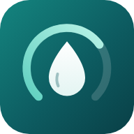

Niciuna. Nivelo nu colectează, nu transmite și nu stochează date pe servere. Tot ce introduci (glicemii, mese, insulină, note, greutate) este salvat exclusiv local, pe dispozitivul tău.
Ca să nu îți pierzi jurnalul dacă memoria principală se deteriorează, aplicația folosește mai multe locuri de stocare, toate pe același dispozitiv:
Niciunul dintre aceste locuri nu părăsește dispozitivul și niciunul nu este accesibil autorului. Primele patru se văd, cu dimensiunile lor, și se pot șterge din aplicație (ultima dispare singură): Mai mult → Confidențialitate → Datele mele pe acest telefon.
Aplicația nu trimite date către autor sau către terți. Nu există conturi, urmărire, analytics sau publicitate. Aplicația funcționează complet offline.
Aplicația întreabă browserul cât spațiu de stocare mai are disponibil, ca să te avertizeze înainte de a se umple. Este o verificare locală: nu se transmit informații nicăieri.
Dacă folosești opțiunea Trimite feedback, aplicația doar deschide propriul tău client de e-mail cu un mesaj pregătit; îl trimiți tu, dacă și când vrei. Mesajul conține doar ce scrii tu, plus câteva detalii tehnice (versiunea aplicației și tipul dispozitivului) pe care le poți șterge înainte de trimitere. Din momentul trimiterii, se aplică politica de confidențialitate a serviciului tău de e-mail.
Fișierele de backup (.json/.csv) și rapoartele pentru medic sunt generate local și partajate doar de tine, către destinația aleasă de tine (de exemplu Google Drive sau e-mail). Din momentul în care le partajezi, se aplică politica de confidențialitate a serviciului respectiv.
Din aplicație poți șterge intrări individuale sau o zi întreagă, precum și copia de siguranță și datele puse deoparte după o avarie (Mai mult → Confidențialitate → Datele mele pe acest telefon).
Pentru a șterge absolut tot, dezinstalează aplicația sau șterge datele site-ului din setările browserului: asta elimină deodată toate locurile de stocare descrise mai sus. Autorul nu păstrează nicio copie, pentru că nu a avut niciodată acces la datele tale.
Aplicația nu se adresează copiilor sub 13 ani și nu colectează cu bună știință date de la aceștia.
Nivelo este un jurnal personal. Nu este un dispozitiv medical, nu oferă sfaturi medicale și nu calculează doze de insulină. Rezumatele afișate (inclusiv HbA1c estimat, precum și parametrii derivați ICR și ISF) sunt valori descriptive, calculate din propriul tău istoric; reflectă ce s-a practicat, nu sunt recomandări. Au rol pur informativ și nu înlocuiesc medicul, glucometrul, senzorul sau analizele de laborator. Deciziile de tratament se iau exclusiv împreună cu medicul. În caz de urgență, sună la 112.
Autor și titular al drepturilor asupra aplicației: Constantin Enache.
Pentru întrebări despre această politică: hello.nivelo@gmail.com